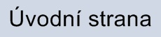
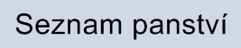
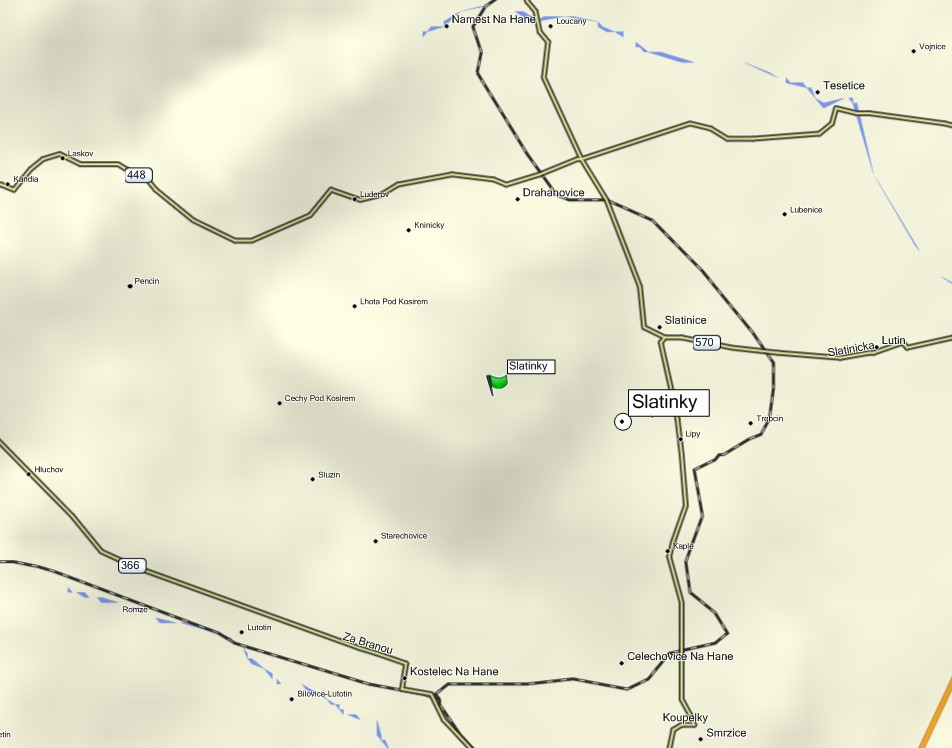

|  |  |
| Historická zemì: | Morava |
| Souèásti panství: | Plumlov, Kostelec na Hané, Alojzov, Bílovice, Bousin, Èechovice, Domamyslice, Drahany, Hamry, Hartmanice, Kobylnièky, Krasice, Køenùvky, Krumsín, Lešany, Mostkovice, Myslejovice, Ohrozim, Otinoves, Prostìjovièky, Rozstání, Seloutky, Slatinice, Slatinky, Smržice, Sobìsuky, Stichovice, Stínava, Vícov, Žárovice, Žešov, mìsto Prostìjov se statky Èechùvky, Dìtkovice, Dobrochov, Vranovice. |
| Pùv. lesní revíry: | Lesní úøad Plumlov: Bousín, Drahany, Hartmanice (dnešní Niva), Myslejovice, Prostìjovièky, Ptení, Rozstání, Seè, Seloutky, Slatinky, Stínava, Žárovice. |
Mapa památníkù v oblasti:

Zdokumentované památníky:
Nezdokumentované památníky:
Výèet možných lokalit na území vojenského újezdu Bøezina nalezneme na stránkách http://www.viktoria-hohe.net/index.php?ids=2&idc=89.
Z tohoto zdroje pochází následující údaje.
Dle starších porostních map jednotlivých revírù velkostatku Plumlov lze pøibližnì lokalizovat místa, kde byly založeny jubilejní háje.
Není však známo, zda byly kamenné pomníèky vystavìny na místì všech uskuteènìných výsadeb.
Napø. v revírech Myslejovice a Prostìjovièky byly vysazeny skupiny dubù, nebyl zde však postaven žádný kamenný památník.
Jednotlivé lokality na území vojenského újezdu Bøezina:
Bousín - na palouku u hájovny Brnìnka, nejzachovalejší (zatím známá) skupinka jubilejních dubù na území vojenského újezdu Bøezina.
Stínava - nedaleko Oklucké hájovny, východnì od nepatrných zbytkù Èertova hrádku. Dodnes pøeživší duby jsou zcela skryty v okolním jehliènatém porostu. V blízkosti prochází èervená turistická trasa smìrem na Malé Hradisko. Lokalita dnes leží vnì území vojenského újezdu.
Prostìjovièky - v blízkosti obce Prostìjovièky, za hranicemi vojenského újezdu Bøezina u mostu pøes Drahanský potok (Brodeèku), podkovovitý výbìžek podmáèené potoèní nivy vpravo od cesty. Skupinka dubù v této lokalitì zcela zanikla, dochoval se pouze jeden vzrostlý strom.
Podle dobového lesního hospodáøského plánu v této lokalitì nebyl umístìn žádný jubilejní památník.
Drahany - cca 0,7 km VJV od osady Bøezina. Lokalita nebyla dosud prozkoumána.
Žárovice - v blízkosti køižovatky silnice Žárovice - Drahany s lesní cestou v lokalitì U sv. Anny.
Myslejovice - západnì od Myslejovic, u Wintrovy boudy. Pravdìpodobným místem výsadby by mohlo být bezprostøední okolí boudy Wintrovky.
Podle lesního hospodáøského plánu pro revír Myslejovice pro roky 1913 - 1922 zdejší dubová výsadba nebyla doplnìna pamìtní deskou.
V uvedených lokalitách nebyly dosud nalezeny jakékoliv pozùstatky po památnících èi pamìtních deskách.
Externí odkazy:
http://www.viktoria-hohe.net/index.php?ids=2&idc=89 - Viktoria Höhe.

{kind=link}
{kind=link}